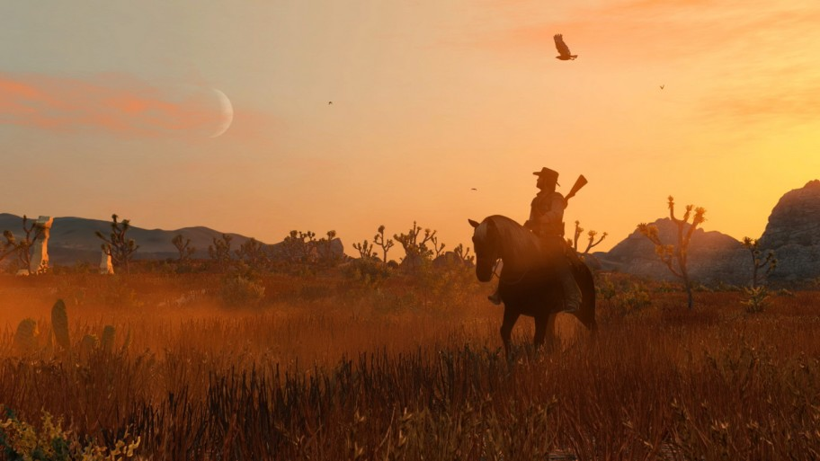

A Rockstar é conhecida por sempre estabelecer novos padrões de qualidade quando se trata de videogames. Foi assim com cada um dos seus jogos lançados seja “GTA”, “Bully” ou “Red Dead Redemption”. Em “Red Dead Redemption 2” eles pretendem redefinir o nosso conceito de mundo aberto mais uma vez, gerando a maior e mais complexa experiência de velho oeste já feita, prometendo um nível de interação com o ambiente jamais visto. Após quase uma década de produção, estamos finalmente próximos do jogo que deve ser um dos concorrentes não só a melhor do ano, mas provavelmente da geração e uma altíssima quantidade de cópias vendidas.Desde o anúncio tivemos diversos trailers para a história e para o gameplay e mais recentemente uma demonstração a portas fechadas para a imprensa.
Red Dead Redemption 2 é um jogo de ação e aventura em mundo aberto desenvolvido pela Rockstar Games. O jogo se passa em 1899, no final da era do Velho Oeste, e segue a história do fora-da-lei Arthur Morgan, membro da gangue Van der Linde. Morgan e seus companheiros estão em fuga após um assalto fracassado em Blackwater, e agora precisam sobreviver em um mundo implacável enquanto são perseguidos por agentes da lei e caçadores de recompensas. O jogo apresenta um mundo vasto e detalhado, com diversas cidades, vilarejos, florestas e montanhas para explorar. Os jogadores podem montar a cavalo, roubar trens, assaltar bancos e interagir com personagens não jogáveis para ganhar dinheiro e melhorar seu equipamento. O jogo também possui um sistema de honra, no qual as ações do jogador afetam sua reputação e como outros personagens reagem a ele. Além da campanha principal, Red Dead Redemption 2 apresenta um modo multijogador online chamado Red Dead Online. Os jogadores podem formar posses com outros jogadores, completar missões e desafios juntos e competir em diversos modos de jogo, como corridas a cavalo e tiroteios em equipe. Com gráficos impressionantes, uma história emocionante e jogabilidade envolvente, Red Dead Redemption 2 é um dos jogos mais aclamados da geração e uma experiência imperdível para os fãs de jogos de mundo aberto e de faroeste.
O jogo oferece várias tutoriais sobre caça, criação, tiro, amarração de cavalos e um milhão de outras coisas, grandes e pequenas. Alguns desses sistemas são mais importantes do que outros, mas há oportunidades de interagir com eles quase sempre. Em jogos de mundo aberto, você eventualmente encontrará missões e atividades que parecem ter sido copiadas de algum outro lugar no jogo, criando uma certa repetição exaustiva na exploração do mundo. Mas em RDR2, desde as maiores missões até as menores interações, todas essas coisas parecem ter sido construídas individualmente. Dessa forma, a sensação transposta é de algo gigantesco, amplo e lindo de se ver, mas extremamente detalhista, dinâmico e divertido de descobrir, algo que poucos jogos do gênero são capazes de proporcionar. Como disse, é uma pegada cinemática dada ao jogo, não apenas na história principal, mas nas missões secundárias e reconhecimento do ambiente, com NPC’s em constante movimentação e interação. Muito pouco da experiência soa artificial ou preguiçosa, já que o cuidado do game atira para todos os elementos da jogabilidade, desde um sistema que, em certa medida, ignora convenções de mundos abertos, como pontos de experiência, aumento de skills e uma interlocução de sistemas, até o incentivo de assumirmos a mesma ideia do jogo, sempre em mudança, sempre experimentando novas atividades. Red Dead Redemption 2 te obriga e instiga a conhecer seu universo de forma progressiva e contemplativa, até mesmo nos mínimos detalhes, perpetuamente modificando e moldando seu período rigoroso aos olhos de um bruto em busca de mudança. Uma obra-prima artística em todos os sentidos.